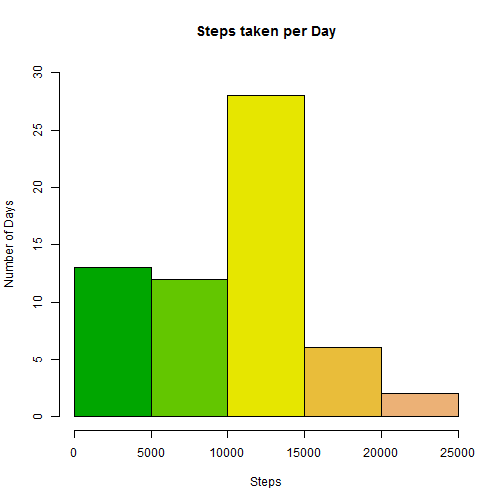
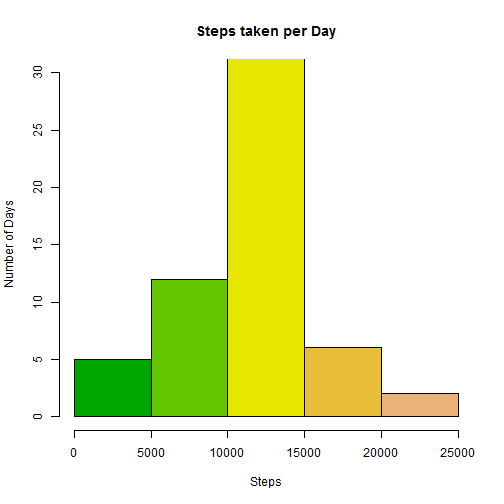
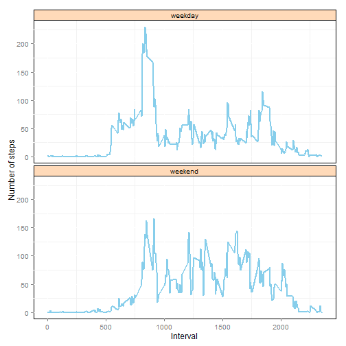

Read raw data
RawData <- read.csv("activity.csv")
library("data.table")
DT <- data.table(RawData)
Total Steps Taken per day
DTS<-DT[, sum(steps, na.rm=TRUE), by = list(date)]
setnames(DTS,"V1","Total Steps")
DTS
## date Total Steps
## 1: 2012-10-01 0
## 2: 2012-10-02 126
## 3: 2012-10-03 11352
## 4: 2012-10-04 12116
## 5: 2012-10-05 13294
## 6: 2012-10-06 15420
## 7: 2012-10-07 11015
## 8: 2012-10-08 0
## 9: 2012-10-09 12811
## 10: 2012-10-10 9900
## 11: 2012-10-11 10304
## 12: 2012-10-12 17382
## 13: 2012-10-13 12426
## 14: 2012-10-14 15098
## 15: 2012-10-15 10139
## 16: 2012-10-16 15084
## 17: 2012-10-17 13452
## 18: 2012-10-18 10056
## 19: 2012-10-19 11829
## 20: 2012-10-20 10395
## 21: 2012-10-21 8821
## 22: 2012-10-22 13460
## 23: 2012-10-23 8918
## 24: 2012-10-24 8355
## 25: 2012-10-25 2492
## 26: 2012-10-26 6778
## 27: 2012-10-27 10119
## 28: 2012-10-28 11458
## 29: 2012-10-29 5018
## 30: 2012-10-30 9819
## 31: 2012-10-31 15414
## 32: 2012-11-01 0
## 33: 2012-11-02 10600
## 34: 2012-11-03 10571
## 35: 2012-11-04 0
## 36: 2012-11-05 10439
## 37: 2012-11-06 8334
## 38: 2012-11-07 12883
## 39: 2012-11-08 3219
## 40: 2012-11-09 0
## 41: 2012-11-10 0
## 42: 2012-11-11 12608
## 43: 2012-11-12 10765
## 44: 2012-11-13 7336
## 45: 2012-11-14 0
## 46: 2012-11-15 41
## 47: 2012-11-16 5441
## 48: 2012-11-17 14339
## 49: 2012-11-18 15110
## 50: 2012-11-19 8841
## 51: 2012-11-20 4472
## 52: 2012-11-21 12787
## 53: 2012-11-22 20427
## 54: 2012-11-23 21194
## 55: 2012-11-24 14478
## 56: 2012-11-25 11834
## 57: 2012-11-26 11162
## 58: 2012-11-27 13646
## 59: 2012-11-28 10183
## 60: 2012-11-29 7047
## 61: 2012-11-30 0
## date Total Steps
Histogram of steps taken per day
hist(DTS$'Total Steps', main="Steps taken per Day", ylab = "Number of Days", xlab="Steps",ylim=c(0,30),col=terrain.colors(7))

Mean and Median Steps taken per day
DT[, list(Mean=mean(steps, na.rm=TRUE),Median=as.double(median(as.double(steps), na.rm=TRUE))), by = list(date)]
## date Mean Median
## 1: 2012-10-01 NaN NA
## 2: 2012-10-02 0.4375000 0
## 3: 2012-10-03 39.4166667 0
## 4: 2012-10-04 42.0694444 0
## 5: 2012-10-05 46.1597222 0
## 6: 2012-10-06 53.5416667 0
## 7: 2012-10-07 38.2465278 0
## 8: 2012-10-08 NaN NA
## 9: 2012-10-09 44.4826389 0
## 10: 2012-10-10 34.3750000 0
## 11: 2012-10-11 35.7777778 0
## 12: 2012-10-12 60.3541667 0
## 13: 2012-10-13 43.1458333 0
## 14: 2012-10-14 52.4236111 0
## 15: 2012-10-15 35.2048611 0
## 16: 2012-10-16 52.3750000 0
## 17: 2012-10-17 46.7083333 0
## 18: 2012-10-18 34.9166667 0
## 19: 2012-10-19 41.0729167 0
## 20: 2012-10-20 36.0937500 0
## 21: 2012-10-21 30.6284722 0
## 22: 2012-10-22 46.7361111 0
## 23: 2012-10-23 30.9652778 0
## 24: 2012-10-24 29.0104167 0
## 25: 2012-10-25 8.6527778 0
## 26: 2012-10-26 23.5347222 0
## 27: 2012-10-27 35.1354167 0
## 28: 2012-10-28 39.7847222 0
## 29: 2012-10-29 17.4236111 0
## 30: 2012-10-30 34.0937500 0
## 31: 2012-10-31 53.5208333 0
## 32: 2012-11-01 NaN NA
## 33: 2012-11-02 36.8055556 0
## 34: 2012-11-03 36.7048611 0
## 35: 2012-11-04 NaN NA
## 36: 2012-11-05 36.2465278 0
## 37: 2012-11-06 28.9375000 0
## 38: 2012-11-07 44.7326389 0
## 39: 2012-11-08 11.1770833 0
## 40: 2012-11-09 NaN NA
## 41: 2012-11-10 NaN NA
## 42: 2012-11-11 43.7777778 0
## 43: 2012-11-12 37.3784722 0
## 44: 2012-11-13 25.4722222 0
## 45: 2012-11-14 NaN NA
## 46: 2012-11-15 0.1423611 0
## 47: 2012-11-16 18.8923611 0
## 48: 2012-11-17 49.7881944 0
## 49: 2012-11-18 52.4652778 0
## 50: 2012-11-19 30.6979167 0
## 51: 2012-11-20 15.5277778 0
## 52: 2012-11-21 44.3993056 0
## 53: 2012-11-22 70.9270833 0
## 54: 2012-11-23 73.5902778 0
## 55: 2012-11-24 50.2708333 0
## 56: 2012-11-25 41.0902778 0
## 57: 2012-11-26 38.7569444 0
## 58: 2012-11-27 47.3819444 0
## 59: 2012-11-28 35.3576389 0
## 60: 2012-11-29 24.4687500 0
## 61: 2012-11-30 NaN NA
## date Mean Median
Calculate Average number of steps taken by interval
DTSS<-DT[, mean(steps,na.rm=TRUE),by = list(interval)]
setnames(DTSS,"V1","Average Steps")
plot(DTSS$interval,DTSS$'Average Steps', type="l"
,ylab="Average Steps",xlab="Interval")
Maximum step is taken at the interval
DTSS['Average Steps'==max(DTSS$'Average Steps'),]
## interval Average Steps
## 1: 835 206.1698
Total data rows with “NA”
sum(complete.cases(DT))
## [1] 15264
Fill the missing values using the Average value of steps by interval
DTM<-merge(DT,DTSS, by="interval")
DTAdjusted<-DTM[,AdjustedSteps:=ifelse(is.na(DTM$steps),DTM$'Average Steps',DTM$steps)]
Calculate Total Steps Taken per day using adjusted data set
DTSAdjusted<-DTAdjusted[, sum(AdjustedSteps), by = list(date)]
setnames(DTSAdjusted,"V1","Total Steps")
DTSAdjusted
## date Total Steps
## 1: 2012-10-01 10766.19
## 2: 2012-10-02 126.00
## 3: 2012-10-03 11352.00
## 4: 2012-10-04 12116.00
## 5: 2012-10-05 13294.00
## 6: 2012-10-06 15420.00
## 7: 2012-10-07 11015.00
## 8: 2012-10-08 10766.19
## 9: 2012-10-09 12811.00
## 10: 2012-10-10 9900.00
## 11: 2012-10-11 10304.00
## 12: 2012-10-12 17382.00
## 13: 2012-10-13 12426.00
## 14: 2012-10-14 15098.00
## 15: 2012-10-15 10139.00
## 16: 2012-10-16 15084.00
## 17: 2012-10-17 13452.00
## 18: 2012-10-18 10056.00
## 19: 2012-10-19 11829.00
## 20: 2012-10-20 10395.00
## 21: 2012-10-21 8821.00
## 22: 2012-10-22 13460.00
## 23: 2012-10-23 8918.00
## 24: 2012-10-24 8355.00
## 25: 2012-10-25 2492.00
## 26: 2012-10-26 6778.00
## 27: 2012-10-27 10119.00
## 28: 2012-10-28 11458.00
## 29: 2012-10-29 5018.00
## 30: 2012-10-30 9819.00
## 31: 2012-10-31 15414.00
## 32: 2012-11-01 10766.19
## 33: 2012-11-02 10600.00
## 34: 2012-11-03 10571.00
## 35: 2012-11-04 10766.19
## 36: 2012-11-05 10439.00
## 37: 2012-11-06 8334.00
## 38: 2012-11-07 12883.00
## 39: 2012-11-08 3219.00
## 40: 2012-11-09 10766.19
## 41: 2012-11-10 10766.19
## 42: 2012-11-11 12608.00
## 43: 2012-11-12 10765.00
## 44: 2012-11-13 7336.00
## 45: 2012-11-14 10766.19
## 46: 2012-11-15 41.00
## 47: 2012-11-16 5441.00
## 48: 2012-11-17 14339.00
## 49: 2012-11-18 15110.00
## 50: 2012-11-19 8841.00
## 51: 2012-11-20 4472.00
## 52: 2012-11-21 12787.00
## 53: 2012-11-22 20427.00
## 54: 2012-11-23 21194.00
## 55: 2012-11-24 14478.00
## 56: 2012-11-25 11834.00
## 57: 2012-11-26 11162.00
## 58: 2012-11-27 13646.00
## 59: 2012-11-28 10183.00
## 60: 2012-11-29 7047.00
## 61: 2012-11-30 10766.19
## date Total Steps
Histogram of steps taken per day using Adjusted Data
hist(DTSAdjusted$'Total Steps', main="Steps taken per Day", ylab = "Number of Days", xlab="Steps",ylim=c(0,30),col=terrain.colors(7))

Mean and Median Steps taken per day on adjusted data
DTAdjusted[, list(Mean=mean(AdjustedSteps),Median=as.double(median(as.double(AdjustedSteps)))), by = list(date)]
## date Mean Median
## 1: 2012-10-01 37.3825996 34.11321
## 2: 2012-10-02 0.4375000 0.00000
## 3: 2012-10-03 39.4166667 0.00000
## 4: 2012-10-04 42.0694444 0.00000
## 5: 2012-10-05 46.1597222 0.00000
## 6: 2012-10-06 53.5416667 0.00000
## 7: 2012-10-07 38.2465278 0.00000
## 8: 2012-10-08 37.3825996 34.11321
## 9: 2012-10-09 44.4826389 0.00000
## 10: 2012-10-10 34.3750000 0.00000
## 11: 2012-10-11 35.7777778 0.00000
## 12: 2012-10-12 60.3541667 0.00000
## 13: 2012-10-13 43.1458333 0.00000
## 14: 2012-10-14 52.4236111 0.00000
## 15: 2012-10-15 35.2048611 0.00000
## 16: 2012-10-16 52.3750000 0.00000
## 17: 2012-10-17 46.7083333 0.00000
## 18: 2012-10-18 34.9166667 0.00000
## 19: 2012-10-19 41.0729167 0.00000
## 20: 2012-10-20 36.0937500 0.00000
## 21: 2012-10-21 30.6284722 0.00000
## 22: 2012-10-22 46.7361111 0.00000
## 23: 2012-10-23 30.9652778 0.00000
## 24: 2012-10-24 29.0104167 0.00000
## 25: 2012-10-25 8.6527778 0.00000
## 26: 2012-10-26 23.5347222 0.00000
## 27: 2012-10-27 35.1354167 0.00000
## 28: 2012-10-28 39.7847222 0.00000
## 29: 2012-10-29 17.4236111 0.00000
## 30: 2012-10-30 34.0937500 0.00000
## 31: 2012-10-31 53.5208333 0.00000
## 32: 2012-11-01 37.3825996 34.11321
## 33: 2012-11-02 36.8055556 0.00000
## 34: 2012-11-03 36.7048611 0.00000
## 35: 2012-11-04 37.3825996 34.11321
## 36: 2012-11-05 36.2465278 0.00000
## 37: 2012-11-06 28.9375000 0.00000
## 38: 2012-11-07 44.7326389 0.00000
## 39: 2012-11-08 11.1770833 0.00000
## 40: 2012-11-09 37.3825996 34.11321
## 41: 2012-11-10 37.3825996 34.11321
## 42: 2012-11-11 43.7777778 0.00000
## 43: 2012-11-12 37.3784722 0.00000
## 44: 2012-11-13 25.4722222 0.00000
## 45: 2012-11-14 37.3825996 34.11321
## 46: 2012-11-15 0.1423611 0.00000
## 47: 2012-11-16 18.8923611 0.00000
## 48: 2012-11-17 49.7881944 0.00000
## 49: 2012-11-18 52.4652778 0.00000
## 50: 2012-11-19 30.6979167 0.00000
## 51: 2012-11-20 15.5277778 0.00000
## 52: 2012-11-21 44.3993056 0.00000
## 53: 2012-11-22 70.9270833 0.00000
## 54: 2012-11-23 73.5902778 0.00000
## 55: 2012-11-24 50.2708333 0.00000
## 56: 2012-11-25 41.0902778 0.00000
## 57: 2012-11-26 38.7569444 0.00000
## 58: 2012-11-27 47.3819444 0.00000
## 59: 2012-11-28 35.3576389 0.00000
## 60: 2012-11-29 24.4687500 0.00000
## 61: 2012-11-30 37.3825996 34.11321
## date Mean Median
Comparing the Adjusted data and original data, mean and median for the days where NA is present for steps varies. Ex. 2012-10-01. Histogram could also be verified to see the steps taken during first 5 days reduced.
Convert the Factor value date to Date Time
str(DTAdjusted)
## Classes 'data.table' and 'data.frame': 17568 obs. of 5 variables:
## $ interval : int 0 0 0 0 0 0 0 0 0 0 ...
## $ steps : int NA 0 0 47 0 0 0 NA 0 34 ...
## $ date : Factor w/ 61 levels "2012-10-01","2012-10-02",..: 1 2 3 4 5 6 7 8 9 10 ...
## $ Average Steps: num 1.72 1.72 1.72 1.72 1.72 ...
## $ AdjustedSteps: num 1.72 0 0 47 0 ...
## - attr(*, "sorted")= chr "interval"
## - attr(*, ".internal.selfref")=<externalptr>
DTAdjusted<-DTAdjusted[,date:=as.Date(date)]
str(DTAdjusted)
## Classes 'data.table' and 'data.frame': 17568 obs. of 5 variables:
## $ interval : int 0 0 0 0 0 0 0 0 0 0 ...
## $ steps : int NA 0 0 47 0 0 0 NA 0 34 ...
## $ date : Date, format: "2012-10-01" "2012-10-02" ...
## $ Average Steps: num 1.72 1.72 1.72 1.72 1.72 ...
## $ AdjustedSteps: num 1.72 0 0 47 0 ...
## - attr(*, "sorted")= chr "interval"
## - attr(*, ".internal.selfref")=<externalptr>
Add variable to qualify a day as weekday or weekend
DTAdjusted<-DTAdjusted[,Day:=ifelse(weekdays(DTAdjusted$date) %in% c("Saturday","Sunday"),"weekend","weekday")]
head(DTAdjusted)
## interval steps date Average Steps AdjustedSteps Day
## 1: 0 NA 2012-10-01 1.716981 1.716981 weekday
## 2: 0 0 2012-10-02 1.716981 0.000000 weekday
## 3: 0 0 2012-10-03 1.716981 0.000000 weekday
## 4: 0 47 2012-10-04 1.716981 47.000000 weekday
## 5: 0 0 2012-10-05 1.716981 0.000000 weekday
## 6: 0 0 2012-10-06 1.716981 0.000000 weekend
Steps by weekday and weekend
DTSSAdjusted<-DTAdjusted[, mean(AdjustedSteps),by = list(interval,Day)]
setnames(DTSSAdjusted,"V1","AverageSteps")
library("ggplot2")
g<-ggplot(DTSSAdjusted,aes(interval,AverageSteps))
p<-g+facet_wrap(~Day,ncol=1)
p<-p+geom_line(size=0.8,color="skyblue")
p<-p+theme(panel.background=element_rect(fill="white", colour="black"))
p<-p+theme(panel.grid=element_line(colour="white"))
p<-p+theme(strip.background=element_rect(fill="peachpuff", colour="black"))
p<-p+ylab("Number of steps")
p<-p+xlab("Interval")
print(p)
